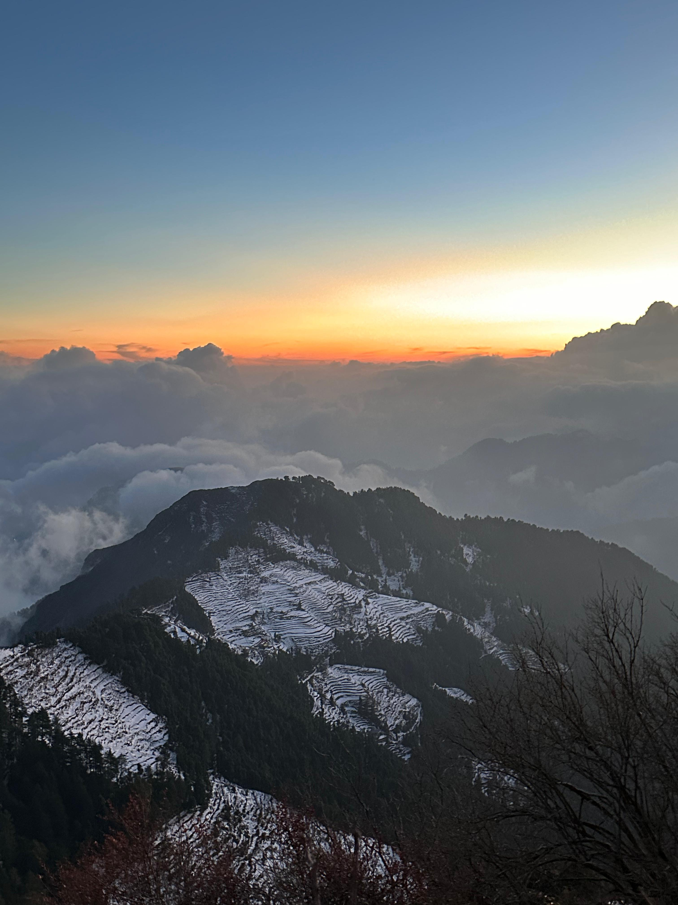
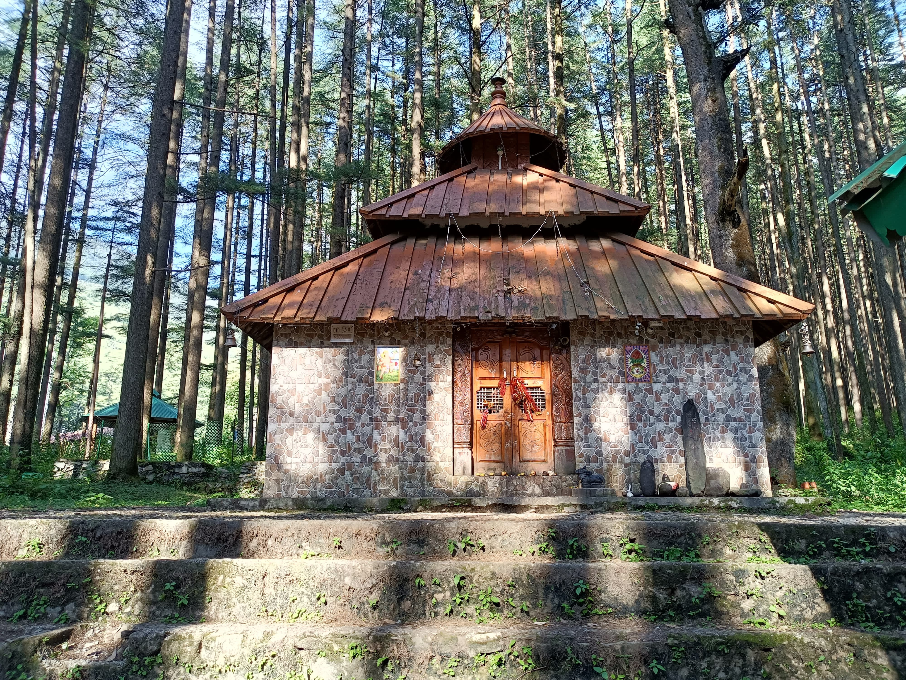
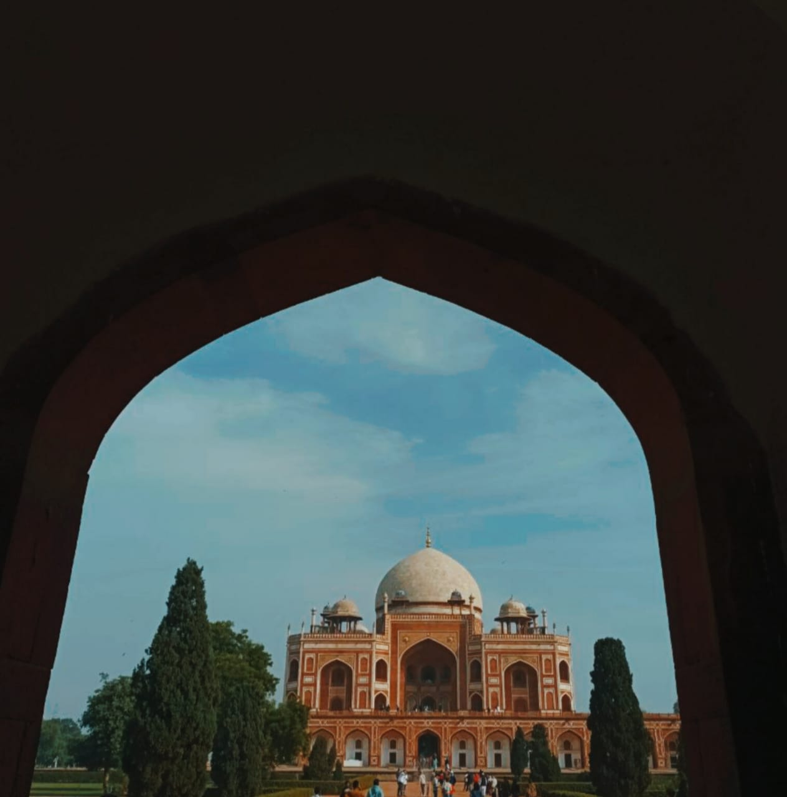
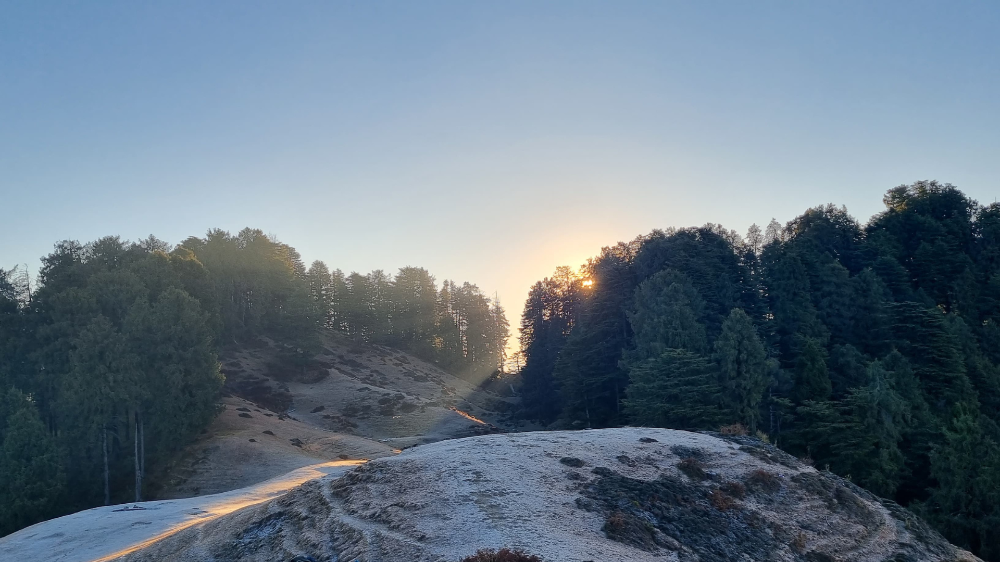
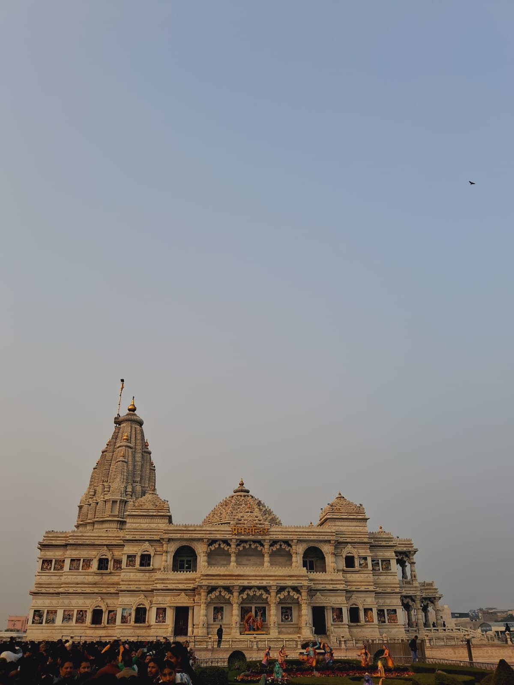

- 
Dhanaulti
Dhanaulti is a small, quiet hill station in Uttarakhand, India. It's located in the Garhwal Himalayan range foothills, at an elevation of 2,286 meters above sea level
.png)
Banaras
Banaras, also known as Kashi, is a city in the state of Uttar Pradesh, India. It is one of the oldest continuously inhabited cities in the world.

Bhadraj Temple
Bhadraj Temple is a quaint temple dedicated to Lord Bal Bhadra (also known as Balram), brother of Sri Krishna. Bhadraj Temple is situated at the hilltop and the air and the atmosphere of the place feels calm and peaceful.

Dalai Hill
Dalai Hills is one amongst the very magnificent and extremely beautiful places located in Mussoorie.The Dalai Hills in Mussoorie is about a 400 meter walk from the Tibetan temple,
- 
Devalsari Temple
The famous Shiva Temple at Devalsari, is said to have been built in the 1600’s, is surrounded by tall deodar trees.
- 
Humayun's Tomb
This tomb, built in 1570, is of particular cultural significance as it was the first garden-tomb on the Indian subcontinent. It inspired several major architectural innovations, culminating in the construction of the Taj Mahal.

Surkanda Devi
Surkanda Devi is a Hindu temple near Kanatal, Uttarakhand, India. It is at an altitude of about 2756 metres lies close to nearby hill stations of Chamba.
- 
Chakrata
Chakrata is one of Uttarakhand's veritable treasures, Situated about 88 km from Dehradun and perched at a height of about 7,000 m above sea level.
- 
Prem Mandir
Prem Mandir is a Hindu temple built in Vrindavan in Mathura district of Uttar Pradesh. This temple is dedicated to Lord Krishna and Radha. Prem Mandir is also called the temple of divine love.